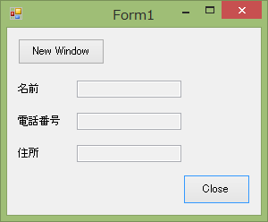
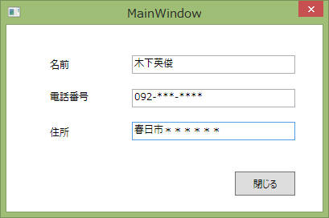
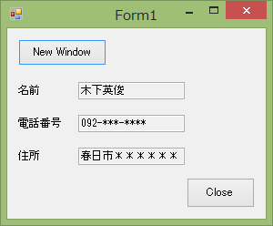

Formアプリの子画面としてWPFで作成した子ウィンドウを起動する方法について記載します。
Formアプリの子画面としてWPFで作成した子ウィンドウを起動する方法について記載します。
| コンパイラ : | Visual Studio 2013 | |
| OS : | Windows7 | |
作成するアプリはこんな感じです。
まずは親側のFormで作成したアプリ。 「New Window」ボタンを押すことでWPFのウィンドウを起動するようにします。

「New Window」ボタンを押すことで下図のWPF子ウィンドウを開くようにします。

「閉じる」ボタンを押すことでForm側へ情報を反映するようにします。

次にコード部分を紹介します。
WPF側のコードです。VS2013で「WPFアプリケーション」を新規作成します。
["MainWindow.xaml"]
<Window x:Name="window" x:Class="WpfWindow.MainWindow"
xmlns="http://schemas.microsoft.com/winfx/2006/xaml/presentation"
xmlns:x="http://schemas.microsoft.com/winfx/2006/xaml"
Title="MainWindow" Height="272" Width="409" ResizeMode="NoResize">
<Grid>
<Label Content="名前" HorizontalAlignment="Left" Margin="49,36,0,0" VerticalAlignment="Top" Height="25.24" Width="78"/>
<Label Content="電話番号" HorizontalAlignment="Left" Margin="49,76,0,0" VerticalAlignment="Top" Height="25.24" Width="78"/>
<Label Content="住所" HorizontalAlignment="Left" Margin="49,121,0,0" VerticalAlignment="Top" Width="78"/>
<TextBox x:Name="txb_name" HorizontalAlignment="Left" Height="23" Margin="156,38.24,0,0" TextWrapping="Wrap" VerticalAlignment="Top" Width="203" Text="{Binding name, ElementName=window}"/>
<TextBox x:Name="txb_telephone" HorizontalAlignment="Left" Height="23" Margin="156,80,0,0" TextWrapping="Wrap" VerticalAlignment="Top" Width="203" Text="{Binding phone, ElementName=window}"/>
<TextBox x:Name="txb_address" HorizontalAlignment="Left" Height="23" Margin="156,121,0,0" TextWrapping="Wrap" VerticalAlignment="Top" Width="203" Text="{Binding address, ElementName=window}"/>
<Button Content="閉じる" HorizontalAlignment="Left" Margin="284,183,0,0" VerticalAlignment="Top" Width="75" Height="30.24" Click="Button_Click"/>
</Grid>
</Window>
["MainWindow.xaml.cs"]
using System;
using System.Collections.Generic;
using System.Linq;
using System.Text;
using System.Windows;
using System.Windows.Controls;
using System.Windows.Data;
using System.Windows.Documents;
using System.Windows.Input;
using System.Windows.Media;
using System.Windows.Media.Imaging;
using System.Windows.Navigation;
using System.Windows.Shapes;
namespace WpfWindow
{
public class FinishEventArgs : EventArgs { }
public delegate void FinishInputHandler(object sender, FinishEventArgs e);
/// <summary>
/// MainWindow.xaml の相互作用ロジック
/// </summary>
public partial class MainWindow : Window
{
public event FinishInputHandler FinishInputEvent;
public string name
{set;get;}
public string phone
{ set; get; }
public string address
{ set; get; }
public MainWindow()
{
InitializeComponent();
}
private void Button_Click(object sender, System.Windows.RoutedEventArgs e)
{
// 入力完了をイベント通知
if (FinishInputEvent != null)
{
FinishEventArgs finishEventArgs = new FinishEventArgs();
FinishInputEvent(this, finishEventArgs);
}
// Windowを閉じる
Close();
}
}
}
次にForm側のコードです。
Formアプリケーションを新規作成後、まずは参照に以下を追加します。WpfWindowは前述のWPFアプリケーションの名前空間です。
["Form1.cs"]
using System; using System.Collections.Generic; using System.ComponentModel; using System.Data; using System.Drawing; using System.Linq; using System.Text; using System.Windows.Forms; using System.Windows.Forms.Integration; // ElementHost using WpfWindow; // MainWindow namespace FormSideAp { public partial class Form1 : Form { private MainWindow window = null; public Form1() { InitializeComponent(); } private void btnClose_Click(object sender, EventArgs e) { Close(); } private void Form1_FormClosing(object sender, FormClosingEventArgs e) { if ( MessageBox.Show("終了してよろしいですか", "確認", MessageBoxButtons.YesNo, MessageBoxIcon.Question)== System.Windows.Forms.DialogResult.No) { // 終了しない e.Cancel = true; } } private void btnNewWindow_Show(object sender, EventArgs e) { window = new MainWindow(); window.FinishInputEvent += FinishInputUpdater; // モーダルの場合は記載不要。 // モードレスの場合、これを記載しないと子ウィンドウ側でASCIIを入力できない。 ElementHost.EnableModelessKeyboardInterop(window); #if false window.Show(); #else window.ShowDialog(); #endif } private void FinishInputUpdater(object sender, EventArgs e) { txb_name.Text = window.name; txb_telephone.Text = window.phone; txb_address.Text = window.address; } } }
これで完成です。「ElementHost.EnableModelessKeyboardInterop()」の部分だけ注意して実装すれば特に大きな問題はなさそうです。
参考プログラム：ダウンロード
本ページの情報は、特記無い限り下記 MIT ライセンスで提供されます。
| 2023-05-25 | - | ページデザイン更新 |
| 2014-06-14 | - | 新規作成 |